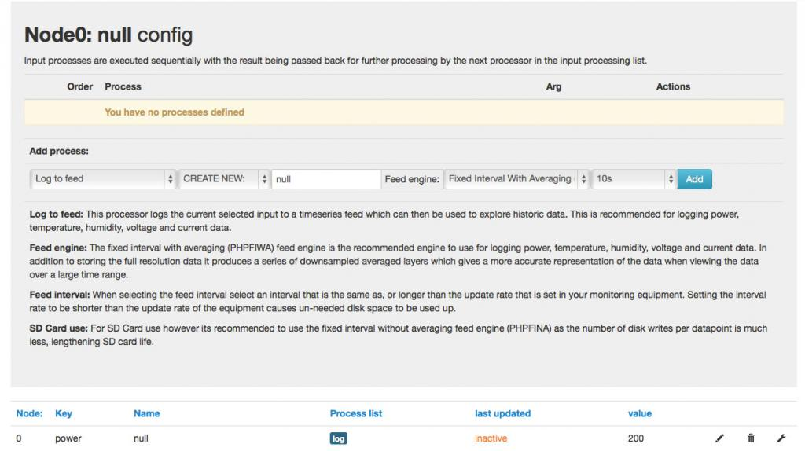

Hi,
Can somebody tell me how to edit earlier defined processes on an input?
I made an Input, and added some processes to the input values. But i can not edit them.
The frontend always tells me "You have no processes defined"
--> look at the attached picture
I send the Input from an arduino over ethernet with this string.
GET http://localhost/emoncms/input/bulk.json?data=[[0,1,27.0,52.5],[0,2,123,456]]&apikey=xxxxxx
Is this because of the trick we made to get the wrench icon working?
http://openenergymonitor.org/emon/node/5455
Or do I have to define manually a node too? In this menu the editing would work.
The other irritation for me is, that even if i send a value to node1, there is no node1 in the node-list.
Any help would be appreciated.
THX/brutzler
Re: Inputs-config. No processes visible after adding
Hi brutzler
The input module and node module are separate input systems, if you post to inputs you will not see that data in nodes. the nodes module will only accept strings of byte values (whole numbers 0-255) so neither of your examples would be suitable.
You cannot edit processe only the processlist, so to edit a process you just delete it and create a new one, reusing the same feed.
Something seems to have gone wrong to have processes not show in the processlist. I have experienced this before and just deleted the inputs, they popped straight back up when I next posted and I then re-added the processes, you can reuse the same feeds with no loss of data (they do not get deleted with the input) or if you want new feeds (clear data) just switch to the feeds page and delete the feeds before re-adding them to the input processes.
Paul
Re: Inputs-config. No processes visible after adding
Hi Paul,
thx for answering.
The info of seperate nodules confirms my speculation :-)
I was only hard wondering, because in the input module there are nodes too.
Something seems to have gone wrong to have processes not show in the processlist
What do you mean? My mistake? Hard to believe. i tried a very lot of times. Made a few new-installations of wamp and emoncms. Even on different Computers and different OS
I think, that this problem has a connection to the missing wrench-function, as I wrote in the first comment of the thread.
For me to understand: You see a list of the processes, when you use the wrench/spanner-Symbol in the input module????
What release of emoncms do you use? Can i download older releases somewhere for testing/comparing?
brutzler
Re: Inputs-config. No processes visible after adding
Ok, no it wasn't clear from your first post this was a reoccurring fault (tried on several installs) I previously "lost" some processes, not being displayed in processlist on one occasion, something different I'm guessing.
i have an 8.2.1 which has been fine for a long time, i have just checked a more recent 8.3.2 and that has the issue you mention and I also use emoncms.org which has just been updated to 8.3.5.
If you are using git you should be able to checkout other releases from GitHub if you are using apt-get then I'm afraid you will need to wait for an update to package or manually install an old deb (not sure of the procedure) or make a temp change to git.
Paul
Re: Inputs-config. No processes visible after adding
Hi,
ok. I will test an older release (e.g. 8.2.1) in my testing VM-Ware to see the difference.
As windows-user I have to take them from GitHub.
As eoncms-newbie and "only, but thankful user" (sorry I can not help you coding, or find problems in the code), there is one general question:
How do the developer get such infos?
brutzler
Re: Inputs-config. No processes visible after adding
The developers monitor/maintain this forum/website so they do get feedback, If you want to contribute directly to development you can use the emoncms repository issues section on github or submit changes from your own fork.
Paul
Re: Inputs-config. No processes visible after adding
Hi,
did some release-tests.
This "prob" occurs (in my tests) changing from 8.2.8 to 8.3.0
looking at the release description it could be logic. There Trystan made a new input interface.
And you see the prob only, with a clean database.
--> I will go on with release 8.2.8
Working so far :-) Even with to database, built up wit 8.3.2.
BUT DO NOT FORGET TO CLEAR BROWSER-CACHE!!!!!
Re: Inputs-config. No processes visible after adding
Having now done some experiments myself, I think you are right to highlight the browser cache should be cleared.
I have a couple of test nodes created on a emoncms.org account and one of these has no processes created. using emoncms.org v8.3.5 I was able click the spanner to access the processlist on a node with some processes already configured but clicking the spanner did nothing on a node that didn't have any pre-existing processes.
I compared this behavior to local server running v8.3.2 and found similar problems, I also found I was able to add processes to input number one of some nodes but not others and even adding and deleting processes on some inputs with pre existing processes was erratic.
When I returned to v8.3.5 to test for the issues I found on v8.3.2 there where a couple of issues initially but then they cleared and I am now unable to get v8.3.5 to fault, I have not changed anything, I have only been flicking about between webpages, nodes and processlists.
Unfortunately the issues with 8.3.2 remain. Of the 4 nodes present (10, 15, 16, 18) only node 10 input 6 had any processes set up and I can only access the processlist of node 10 inputs 1 & 6, and also node 15 input 1, but all other nodes/inputs do not respond to clicking the spanner.
All my tests were done on upgraded installs I have not yet tested a fresh install. although I have created new nodes on v8.3.5 since it "sorted itself out" and have had no issues at all accessing the processlist or creating/deleting processes on that new node or any other node.
If I get a chance I will try a fresh v8.3.5 local install to compare.
Re: Inputs-config. No processes visible after adding
Hi,
I am experiencing the same problem with 8.3.5 on both rpi and wamp with both having new databases.
[I did the wrench fix on both installs]
Is the only resolve to revert to 8.2.8? [My emoncms is new so dont have any older db to upgrade from]
Screenshot attached of my rpi install. I have defined a log to feed but it doesnt show up in the processlist...

thanks
Jason